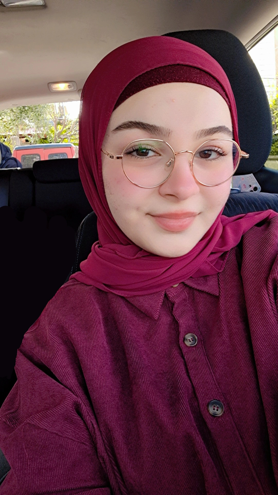
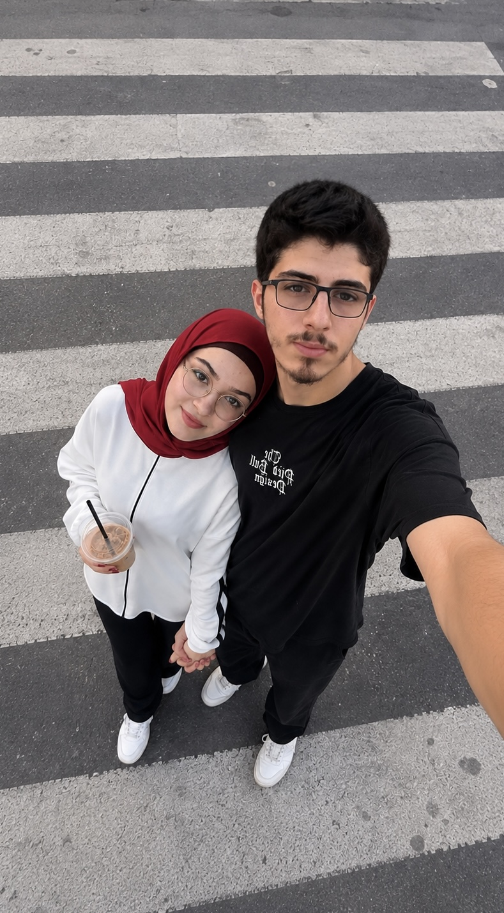
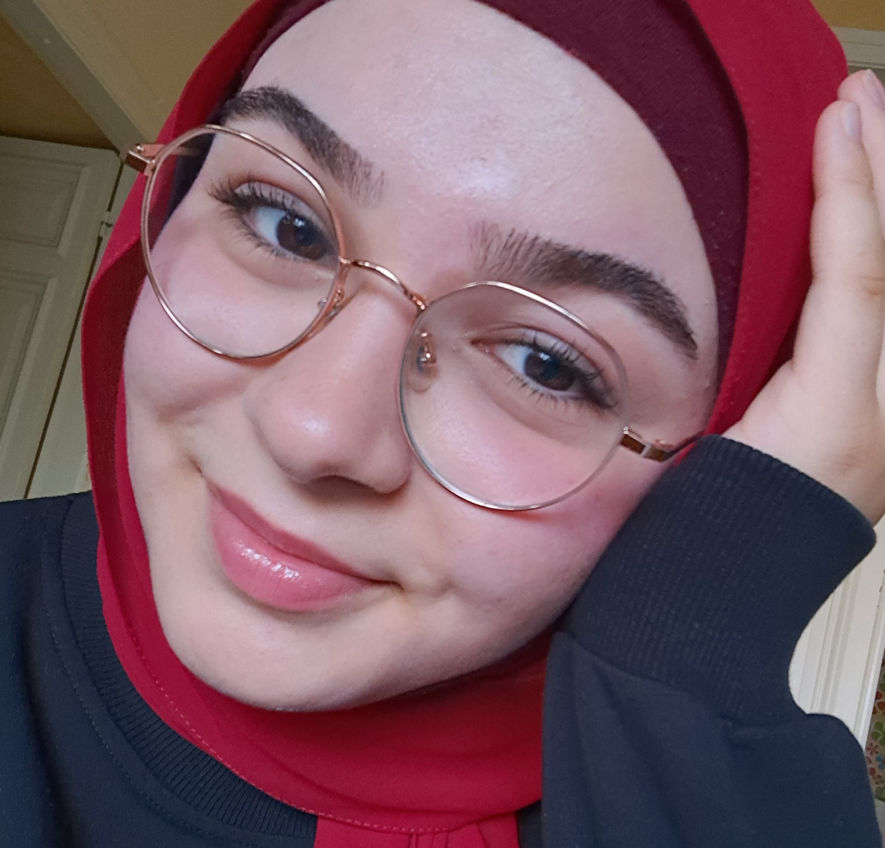

01
The beginning
The first interaction, the first messages, and a conversation I didn't know I'd come to treasure.
 a picture of where our story began
a picture of where our story began
A quick question for you
I made a tiny corner of the internet just for you.
a tiny surprise, made just for you, Yasmin ♡
IT STARTED WITH A MESSAGE
Funny how one little conversation can become such a lovely part of your life.
I don't know if we understood it back then, but I'm glad our paths crossed. This is my little way of keeping the sweetest pieces of our story in one place.
A few pages from our story. Built moment by moment, and shared with love.
The first interaction, the first messages, and a conversation I didn't know I'd come to treasure.
a picture of where our story began
Hours can feel like minutes when it's the right person on the other side.
 a memory of one of our calls
a memory of one of our calls
One of those memories that feels extra special because it finally happened in real life.
 the day we finally met
the day we finally met
A day and a moment I would love to live everyday again and again forever.
 one tiny moment worth keeping
one tiny moment worth keeping
Not every favorite memory has to be a big event. Sometimes it's just your face, your laugh, or the way a normal day feels a little softer with you in it.

01
02
03Little frames for the moments that made me smile. You are my absolute favorite moments.
Some moments deserve to be stored in the heart. Reliving the moment everytime I replay.
[ our last meeeting. miss you already ♡ ]
[ My favorite meeting ♡ ]
Tap a little note my princess.
A LETTER, JUST FOR YOU
Happy birthday to my favorite girl. ♡
I hope this new year of your life brings you peaceful days, a heart that feels lighter, reasons to laugh until your cheeks hurt, and little moments that remind you how loved you are.
Thank you for the calls, the messages, the patience, the silly moments, and all the pieces of your life that you let me be part of. I love getting to know you — not just the big things, but the little details that make you you.
My wish for you is that you keep growing into the person you dream of being, while remembering that you are already worth so much love today. I hope I get to celebrate many more birthdays with you, making new memories to add to this little page.
With all my love, your favorite person Mohammad (I hope) ♡
TODAY IS ALL ABOUT YOU
Close your eyes for a second and wish for something beautiful.
ONE LAST THING
Out of all the little coincidences in this world, one of my favorites is getting to know you, Yasmin.
END OF THIS LITTLE PAGE
NOT THE END OF OUR MEMORIES ♡